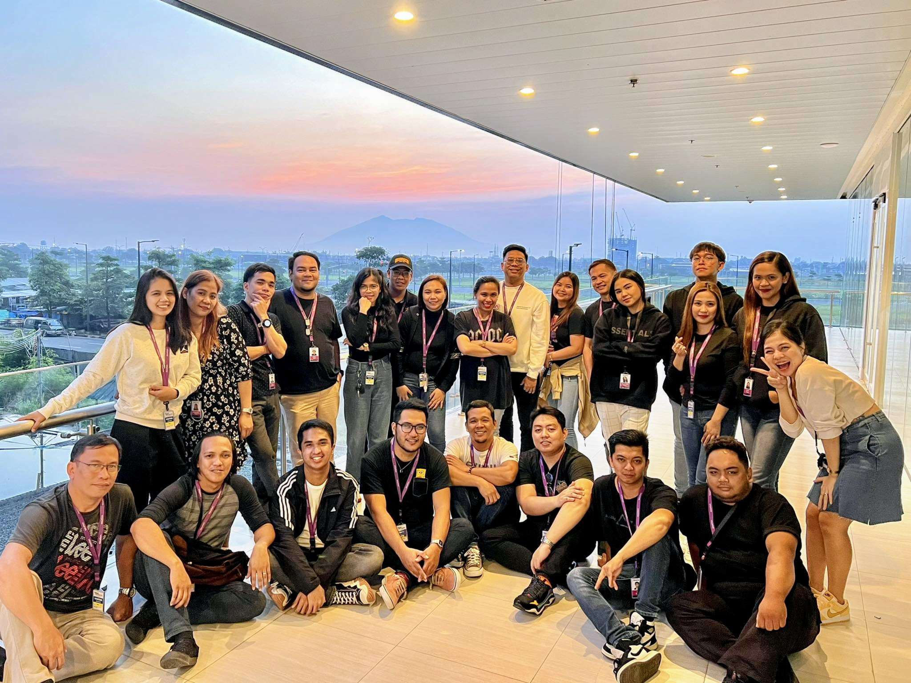

LifestyleNovember 10, 2023
My Call Center Experience
A memorable moment with my colleagues at Asurion Company in Clark, Pampanga, where I gained valuable experience as a Call Center Representative. Working in the customer service industry helped me develop my communication skills, active listening, patience, problem-solving abilities, and professionalism. Being part of this team taught me the importance of teamwork, collaboration, accountability, and supporting one another in achieving common goals. It also gave me the opportunity to handle different customer concerns, adapt to challenging situations, and build confidence in communicating with people. More than just a workplace, Asurion became a place where I gained meaningful experiences, built friendships, and developed skills that continue to help me in my personal, academic, and professional journey...
Read More